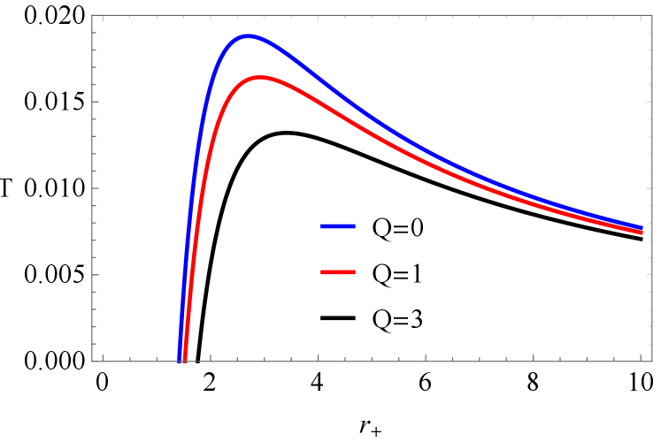
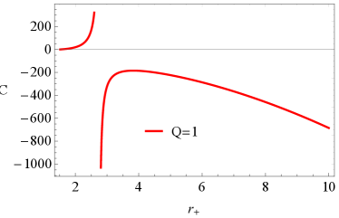
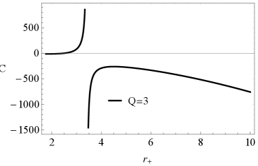

الثقوب السوداء المشحونة الناشئة عن ازدواجية T
Patricio Gaetea** * البريد الإلكتروني: patricio.gaete@usm.cl , Kimet Jusufib†† † البريد الإلكتروني: kimet.jusufi@unite.edu.mk و Piero Nicolinic,d,e,f‡‡ ‡ البريد الإلكتروني: nicolini@fias.uni-frankfurt.de
aDepartamento de Física and Centro Científico-Tecnológico de Valparaíso-CCTVal, Universidad Técnica Federico Santa María,
Valparaíso, Chile
bPhysics Department, State University of Tetovo,
Ilinden Street nn, 1200,
Tetovo, North Macedonia
cCenter for Astro, Particle and Planetary Physics,
New York University Abu Dhabi, Abu Dhabi, UAE
dFrankfurt Institute for Advanced Studies (FIAS),
Frankfurt am Main, Germany
eInstitut für Theoretische Physik,
Goethe-Universität, Frankfurt am Main, Germany
fDipartimento di Fisica,
Università degli Studi di Trieste, Trieste, Italy§§
§
العنوان الحالي
الملخص
نقدم في هذه الورقة عائلة من حلول الثقوب السوداء المنتظمة في حضور الشحنة والزخم الزاوي. ونناقش كذلك الديناميكا الحرارية المرتبطة بها، ونعلّق على دورة حياة الثقب الأسود خلال طوري التجرّد وتباطؤ الدوران.
ومن اللافت أن الحل الساكن يشبه زمكان Ayón-Beato–García، شريطة إعادة تعريف مقياس ازدواجية T بدلالة الشحنة الكهربائية،  .
والعامل الأساسي الذي تقوم عليه صياغتنا هو استخدام مروّج Padmanabhan لحساب الجهود الساكنة. وهذا المروّج يرمّز آثار ازدواجية T في الأوتار. ويعني ذلك أن انتظام الزمكانات المعروضة هنا يمكن أن يفتح نافذة جديدة على ظواهرية نظرية الأوتار.
.
والعامل الأساسي الذي تقوم عليه صياغتنا هو استخدام مروّج Padmanabhan لحساب الجهود الساكنة. وهذا المروّج يرمّز آثار ازدواجية T في الأوتار. ويعني ذلك أن انتظام الزمكانات المعروضة هنا يمكن أن يفتح نافذة جديدة على ظواهرية نظرية الأوتار.
1 مقدمة
بعد سنوات من النشاط المكثف، ما زال البحث في الجاذبية الكمومية في حالة من التعليق العلمي. وعلى الرغم من بعض التقدم في هذا المجال، فإن فهمنا للكون عند المقاييس القصيرة جداً لا يزال محدوداً. ويرجع هذا الوضع على الأرجح إلى ثلاث مشكلات رئيسية نعاني منها حالياً: وفرة مفرطة في الصياغات المتنافسة، وندرة في التنبؤات الظواهرية، والأهم غياب مقلق للبيانات التجريبية [1].
وفي الجانب الإيجابي، هناك أمر واحد على الأقل فهمناه فهماً كاملاً. كلاسيكياً، يكون الانحناء استجابة الزمكان لوجود مقدار معين من الكتلة-الطاقة. غير أن هذا لا يمثل سوى نصف القصة الكاملة. إن القدرة على تمييز النقاط على متشعب ما تعتمد على دقة جهاز القياس. وكمومياً، ترتبط الدقة بطاقة المسبار المتاح لنا. ولا يمكن لهذه الطاقة أن تنمو إلى ما لا نهاية، كما يُفترض ضمنياً في كثير من الأحيان. ففي جوار طاقة بلانك، تنهار حتى فكرة طول موجة كومبتون. ويبدأ كل من الزمكان والمادة بالخضوع لتقلبات كمومية عنيفة. وفي النهاية ينهار التركيز الهائل للكتلة-الطاقة إلى ثقب أسود11 1 يقدّم مقترح الكرة الزغبية سيناريو بديلاً للمرحلة النهائية من الانهيار [2].. وهذا الحدث يضع، بحكم الواقع، طول بلانك حداً أدنى لدقة أي قياس [3, 4]. وعند طاقات قريبة من مقياس بلانك، تبيّن أن بنية كسيرية يمكن أن تمثل بأمانة البنية الرغوية للزمكان [5, 6, 7]. لذلك يمكن النظر إلى التكسير بوصفها مؤشراً زمكانياً جديداً. فهي استجابة أي زيادة في دقة فحص الزمكان، على نحو يشبه كثيراً ما يفعله الانحناء بالنسبة إلى الكتلة-الطاقة.
إن تفاصيل الانهيار المذكور أعلاه إلى ثقب أسود بلانكي غير معروفة عموماً. ومع ذلك، فإن تكوّن أفق حدث تدعمه دراسات التشتت عند الطاقات القصوى. وتشترك الأوتار البلانكية والثقوب السوداء في خصائص مهمة، مثل طبيعة عملية الاضمحلال [3] والتوافق بين الحالات [8]. وعلاوة على ذلك، فإن الثقوب السوداء ضرورية لتفسير كيفية كلاسيكية النظام. ففي تجربة القياس أعلاه لن تؤدي زيادة إضافية في الطاقة إلى أي تحسن في الدقة. بل إن الطاقة الإضافية ستزيد مقياس طول النظام، الذي يصبح محكوماً بنصف قطره الثقالي. وفي نهاية المطاف ستُستكشف مقاييس طول عيانية في النظام فوق البلانكي [4]. وتلتقط نظرية الأوتار هذه السمة أيضاً [9, 10, 11]. إذ يكشف تشتت الأوتار فوق البلانكي صيغة معدّلة لعلاقة عدم اليقين،
| (1) |
تُعرف باسم مبدأ عدم اليقين المعمم (GUP).
للوهلة الأولى، يمكن تفسير التكسير بوصفه أثراً مزعجاً. فالحد الجديد في (1) يزيد عدم اليقين الكلي. وحتى في النهاية ، تكون غير منعدمة. وبما أن ، فإن التكسير ظاهرة حقيقية من ظواهر الجاذبية الكمومية تظهر أيضاً في غياب التقلبات الكمومية التقليدية. ومع ذلك، يمكن الاستفادة من عدم اليقين المعزز. فباشتقاق (1) يجد المرء ، أي قطعاً طبيعياً فوق بنفسجي لأي نظرية حقل، بما في ذلك النسبية العامة.
وعلى امتداد هذا الخط من التفكير، شهد بحث الجاذبية الكمومية “تفرعاً”. فبالتوازي مع البحث في الأسس، بات هناك اهتمام نشط باستكشاف تبعات التكسير، وهو المكوّن الوحيد من الجاذبية الكمومية الذي نعرف كيف نطبقه. ومن الأمثلة البارزة على ذلك الثقوب السوداء المنتظمة في الهندسة اللاتبادلية [12, 13, 14]. وهذه الأخيرة هي نتيجة فرعية أخرى من نظرية الأوتار تشبه GUP.
إن إزالة التفرد بأثر مستحث وترياً مثل الهندسة اللاتبادلية وفّرت واحدة من أولى المظلات النظرية للأدبيات القائمة أصلاً حول الثقوب السوداء المنتظمة (مثلاً [15, 16, 17, 18]). وبسبب طبيعتها غير المحلية، حفزت الثقوب السوداء في الهندسة اللاتبادلية أيضاً مزيداً من الدراسات في الجاذبية غير المحلية [19]. وتشمل هذه الأخيرة تشوهات لفعل Einstein-Hilbert يمكنها إعادة إنتاج آثار GUP [20, 21, 22, 23]، وفيزياء الجسيمات غير الجسيمية [24]، ونموذج الاكتمال الذاتي للجاذبية المقترح حديثاً [25, 26]. ومن المثير للاهتمام أن الجاذبية غير المحلية تلطّف تفرد الانحناء. غير أن هذا الأخير لا يمكن تحسينه إلا ضمن شروط معينة [27].
في هذه الوفرة من المقترحات، توجد آلية تبرز بوضوح. فحتى إذا كانت (1) مجرد تقريب لعلاقة أعقد تحتوي حدوداً من رتب أعلى في ، فإنها تكشف بالفعل نوعاً من التناظر بين “العالم” الواقع دون وما فوقها. وتظهر هذه السمة على نحو جلي في نظرية الأوتار وتسمى ازدواجية T. غير أنها خاصية عامة لاحظها Padmanabhan [28, 29]. إذ تتجلى استجابة الزمكان لوجود حقل في ازدواجية في تكامل المسار. وتصبح المساهمات في التكامل ثابتة تحت تبديل طول المسار المتناهي الصغر . وهذا يحدد إدخال “طول نقطة صفرية”، ، في مروّج الحقل، الذي تُكتب صورته في فضاء الزخم على النحو الآتي:
| (2) |
حيث إن دالة Bessel معدّلة من النوع الثاني. وللتعبير أعلاه ثلاث سمات مهمة:
-
i)
إنه متقارب أُسياً عند
 العالية، ويعيد إنتاج المروّج القياسي بصورة صحيحة عند المنخفضة؛
العالية، ويعيد إنتاج المروّج القياسي بصورة صحيحة عند المنخفضة؛ -
ii)
إنه يلتقط الخواص الجيدة لكل من GUP (ازدواجية شفافة بين الجسيم والثقب الأسود) والهندسة اللاتبادلية (تقارب فوق بنفسجي غير كثير الحدود)؛
- iii)
ظهرت مؤخراً تطبيقاتان مهمتان لـ (2).
كان التطبيق الأول اشتقاق هندسة زمكانية منتظمة يولدها مصدر ساكن، متماثل كروياً، ومحايد [33].
والسمة المفاجئة هي أن طول النقطة الصفرية يتطابق مع شحنة حل Bardeen  . لذلك فإن الزمكان، لكونه هو نفسه شكلياً، منتظم في كل مكان:
. لذلك فإن الزمكان، لكونه هو نفسه شكلياً، منتظم في كل مكان:
| (3) |
أما التطبيق الثاني فكان صياغة كهروديناميكا منتهية يحكمها مروّج حقل فوتوني مزدوج T [34, 35]. وقد وُجد أن الجهد الكهروستاتيكي الموافق هو . والبعد الفعال عدد مستمر يعتمد على المسافة الشعاعية  . وهذا يؤكد أن ازدواجية T تُدخل التكسير. وبما أن ، فإن هذا التكسير يضمن الانتظام فوق البنفسجي المنشود.
. وهذا يؤكد أن ازدواجية T تُدخل التكسير. وبما أن ، فإن هذا التكسير يضمن الانتظام فوق البنفسجي المنشود.
إزاء هذه الخلفية، من الطبيعي إكمال برنامج مقاييس الثقوب السوداء المعدّلة بازدواجية T. ومن المتوقع أن تكون الآثار الجديدة مرئية عند مقياس  ، يمكن أن يقع في أي موضع بين 10 TeV وطاقة بلانك.
وبالنسبة إلى الكتل الشمسية، يكون ترتيب المعلمات هو . وبالدقة التجريبية الحالية، من غير المرجح بالتالي العثور على آثار قابلة للقياس في الثقوب السوداء النجمية أو الأثقل منها. أما بالنسبة إلى الثقوب السوداء الأصغر، فالأثر مهم حتماً، إذ تُفسَّر نشأتها باضمحلال كمومي لفضاء دي سيتر في الكون المبكر [36, 37, 38].
، يمكن أن يقع في أي موضع بين 10 TeV وطاقة بلانك.
وبالنسبة إلى الكتل الشمسية، يكون ترتيب المعلمات هو . وبالدقة التجريبية الحالية، من غير المرجح بالتالي العثور على آثار قابلة للقياس في الثقوب السوداء النجمية أو الأثقل منها. أما بالنسبة إلى الثقوب السوداء الأصغر، فالأثر مهم حتماً، إذ تُفسَّر نشأتها باضمحلال كمومي لفضاء دي سيتر في الكون المبكر [36, 37, 38].
الحل المحايد (3) هو الحالة القاعية في فضاء المعلمات. فهو لا يعاني من رد فعل كمومي خلفي، ويتنبأ ببقية باردة مستقرة بوصفها المرحلة النهائية للتبخر. وعلى العكس من ذلك، فإن الحلول المشحونة والدورانية عابرة لأنها تضمحل عبر تأثيري Hawking وSchwinger معاً [39, 40]. وبالنسبة إلى الثقوب السوداء المجهرية، يكون التفريغ آنياً تقريباً [41]. ومع ذلك، فإن دراسة آثار الشحنة واللف المغزلي مهمة لطورَي “التجرّد” و“تباطؤ الدوران” في دورة حياة الثقب الأسود. وبعبارة أخرى، يمكن أن يكون الحل المحايد إما الناتج المباشر للاضمحلال الكمومي لفضاء دي سيتر و/أو التهيئة النهائية لثقب أسود متحلل ذي شحنة ولف مغزلي. إضافة إلى ذلك، لا يمثّل زمن الاضمحلال القصير مشكلة، لأنه يقارن بمدة الحقبة السابقة للتضخم. ومن المتوقع أن تكون الثقوب السوداء المحايدة وكذلك المشحونة والدورانية قد ملأت الكون المبكر ضمن حساء بدائي من الأجسام الغريبة.
وقبل عرض محتوى الورقة، لا بد من إبداء ملاحظة. في الأقسام التالية، ستُشتق حلول الثقوب السوداء المشحونة بافتراض تشوه بازدواجية T لكهروديناميكا Maxwell. وهذا يمثل بالضرورة نموذجاً مبسطاً. فقد لاحظنا مؤخراً أن الكهروديناميكا الخطية لازدواجية T لا تتحقق في الطبيعة [34]. فلا يمكن فصل النظام غير الخطي عن نظام بداية آثار ازدواجية T. ونظراً لاتساع المسألة الكاملة وتعقيدها، نهدف إلى معالجة السيناريو الكامل في منشور لاحق. أما الآن، فنهدف إلى التركيز على فهم السمات الأولية التي يمكن أن تظهر في مقاييس تتجاوز الحالة المحايدة.
2 معادلات الحقل والزمكان الساكن
دُرست آثار ازدواجية T في الأدبيات من خلال النظر في أفعال حقلية معدّلة. فعلى سبيل المثال، أُدخل المروّج (2) في كهروديناميكا الفضاء المسطح، بافتراض حد في الفعل من الشكل
| (4) |
حيث
| (5) |
مع  . ويساوي المؤثر غير المحلي
. ويساوي المؤثر غير المحلي  الواحد عند الحجج الصغيرة، في حين يُدخل حد تخميد أسي عندما . ويمكن كتابة معادلة الحقل الناتجة إما بدلالة موتر شدة حقل غير محلي أو، على نحو مكافئ، بدلالة القياسي المقترن بكثافة تيار غير محلية [24, 34, 42].
وعلى امتداد الخط نفسه من التفكير، يمكن اشتقاق آثار T المزدوجة للحقل الثقالي بحل معادلات Einstein المقترنة بموتر طاقة-زخم غير قياسي [33, 43].
الواحد عند الحجج الصغيرة، في حين يُدخل حد تخميد أسي عندما . ويمكن كتابة معادلة الحقل الناتجة إما بدلالة موتر شدة حقل غير محلي أو، على نحو مكافئ، بدلالة القياسي المقترن بكثافة تيار غير محلية [24, 34, 42].
وعلى امتداد الخط نفسه من التفكير، يمكن اشتقاق آثار T المزدوجة للحقل الثقالي بحل معادلات Einstein المقترنة بموتر طاقة-زخم غير قياسي [33, 43].
أما بالنسبة إلى الجاذبية والكهروديناميكا المقترنتين في منظومة معادلات، فالوضع أعقد. ينطلق المرء من فعل [41]
| (6) |
حيث تمثل و و حدوداً ذات مشتقات عليا. ويجب أن تطابق المعادلة (6) نظرية Einstein-Maxwell الكلاسيكية في حد الطاقة المنخفضة/الانحناء الضعيف . وتحتوي لاغرانجية المادة على كل من حد حقل المعيار المقترن بالجاذبية وحد “الكتلة العارية” . ونتيجة لذلك، يكتب المرء:
| (7) |
وتولّد التغايرات بالنسبة إلى حقل المعيار والمقياس منظومة معادلات الجاذبية-الكهروديناميكا المشوهة بازدواجية T. ويجب أن تحقق هذه المنظومة حدين لا تعود فيهما الجاذبية والكهروديناميكا مقترنتين، لكنهما تظلان محتفظتين بطابعهما غير المحلي. وهذان الحدان هما:
-
i)
عندما ، ينبغي أن يحصل المرء على معادلات Einstein غير المحلية
(8) حيث إن موتر طاقة-زخم فعال، وتنشأ من تغاير الحد المعتمد على
 في (7)، بينما يبقى موتر Einstein غير معدل؛
في (7)، بينما يبقى موتر Einstein غير معدل؛ -
ii)
عندما ، ينتهي المرء إلى كهروديناميكا منتهية في فضاء مسطح موصوفة بالفعل (4).
قبل المتابعة، ينبغي إبداء ملاحظتين إضافيتين.
أولاً، إن هيئة اللاغرانجية  التي تولّد (8) قد دُرست من قبل عدد من المؤلفين (انظر مثلاً [19, 24, 44, 45, 46, 47, 48, 49, 50])، وهي ليست وحيدة.
ثانياً، باتباع الطريقة المستخدمة لاشتقاق الثقوب السوداء اللاتبادلية المشحونة [13]، سنفترض أنه، حتى حدود بعض الحدود الآتية من
التي تولّد (8) قد دُرست من قبل عدد من المؤلفين (انظر مثلاً [19, 24, 44, 45, 46, 47, 48, 49, 50])، وهي ليست وحيدة.
ثانياً، باتباع الطريقة المستخدمة لاشتقاق الثقوب السوداء اللاتبادلية المشحونة [13]، سنفترض أنه، حتى حدود بعض الحدود الآتية من  ، يمكن كتابة موتر الطاقة-الزخم على الصورة
، يمكن كتابة موتر الطاقة-الزخم على الصورة
| (9) |
حيث
| (10) |
و. وسيدخل موتر الطاقة-الزخم أعلاه في معادلات Einstein غير المحلية، على نحو مشابه لما فُعل في (8) للحالة المحايدة. ولتبرير الإجراء أعلاه، نمضي كما يلي.
يمكن كتابة الحل العام لمعادلات الحقل الثقالي في حضور مصدر ساكن ومتماثل كروياً بصيغة مدمجة هي
| (11) |
مع
| (12) |
و
| (13) |
ومن أكثر الجوانب اللافتة في العلاقة أعلاه أن مقياس التكامل هو نفسه كما في الفضاء المسطح. وعملياً، تقترن الجاذبية بالكتلة النيوتنية، وهي حقيقة تبسط اشتقاق الحل الكامل تبسيطاً جذرياً [51, p. 126]. وتُرمّز التعديلات بالنسبة إلى النسبية العامة في  ، التي تحدد ازدواجية T هيئتها.
كما يسمح حساب الفضاء المسطح باشتقاق شدة حقل Maxwell المعدّلة بازدواجية T،
، التي تحدد ازدواجية T هيئتها.
كما يسمح حساب الفضاء المسطح باشتقاق شدة حقل Maxwell المعدّلة بازدواجية T،  ، المقترنة بتيار غير قياسي . وبهذه الطريقة يمكن تمثيل بدلالة ، بدلاً من تمثيله بدلالة الموتر غير المحلي .
، المقترنة بتيار غير قياسي . وبهذه الطريقة يمكن تمثيل بدلالة ، بدلاً من تمثيله بدلالة الموتر غير المحلي .
وخلاصة القول إن مسألة اشتقاق الزمكان الساكن تختزل إلى حل المنظومة الآتية
| (14) | |||
| (15) |
مع و و
| (16) |
وفي هذه العملية يمكن إهمال أي اقتران بين حقل المعيار والحدود غير المحلية الآتية من لاغرانجية الجاذبية ، لأنها لا تؤثر في . غير أنه من الضروري التعليق على أهمية مثل هذه الحدود غير المحلية، التي تولد تصحيحاً لموتر الطاقة-الزخم أعلاه. وسنوسع النقاش حول هذه النقطة في القسم التالي.
2.1 عنصر الخط المحسّن بازدواجية T
تتطلب الكتلة التراكمية  تكامل كثافة الكتلة العارية والطاقة المخزونة في الحقل الكهرومغناطيسي:
تكامل كثافة الكتلة العارية والطاقة المخزونة في الحقل الكهرومغناطيسي:
| (17) |
ويستلزم حفظ الطاقة-الزخم وجود حدود ضغط غير منعدمة، أي .
يجب على دوال الكثافة والضغط أعلاه أن تصف الفراغ الكهرومغناطيسي التقليدي عند المسافات الكبيرة لضمان المطابقة مع هندسة Reissner-Nordström. وفي المقابل، عند المسافات القصيرة، تحدد ازدواجية T مقياساً  تصبح عنده الآثار الكمومية مهمة. وفي هذه المنطقة تُنتهك شروط الطاقة،
مما يفتح إمكانية تفادي مبرهنات التفرد [52] للحصول على حل منتظم.
والصورة الفيزيائية هي أن التقلبات الكمومية المرتبطة بـ
تصبح عنده الآثار الكمومية مهمة. وفي هذه المنطقة تُنتهك شروط الطاقة،
مما يفتح إمكانية تفادي مبرهنات التفرد [52] للحصول على حل منتظم.
والصورة الفيزيائية هي أن التقلبات الكمومية المرتبطة بـ  تعاكس الجذب الثقالي وتمنع الانهيار الثقالي. وينشأ عن متوسط هذه التقلبات على حجم إقليم مضاد للجاذبية، مملوء بمائع ذي كثافة وضغط منتهيين.
تعاكس الجذب الثقالي وتمنع الانهيار الثقالي. وينشأ عن متوسط هذه التقلبات على حجم إقليم مضاد للجاذبية، مملوء بمائع ذي كثافة وضغط منتهيين.
يتطلب حل منظومة المعادلات معادلة حالة لحدود الضغط. والعلاقة هي الخيار الأكثر طبيعية، لأنها تقتضي شرطاً شبيهاً بشرط Schwarzschild لمعاملات المقياس، . ونتيجة لذلك تصبح دالة الشكل  هي المجهول الوحيد. وعند المسافات القصيرة، يقتضي انتظام المصدر أن
هي المجهول الوحيد. وعند المسافات القصيرة، يقتضي انتظام المصدر أن
| (18) |
وعملياً، فإن منطقة مضاد الجاذبية المذكورة أعلاه هي كرة من زمكان دي سيتر عند الأصل، ويقابل ثابتها الكوني طاقة الفراغ الكمومي (المنتظمة) الناشئة عن تبادل الجسيمات الافتراضية.
وباستخدام معادلة الحالة أعلاه، يمكن كتابة موتر الطاقة-الزخم على الصورة
| (19) |
مع
| (20) |
وينعدم الموتر عند الأصل وعند المسافات الكبيرة بالنسبة إلى  . ولا يكون غير منعدم إلا في المجال المتوسط ويكسر خواص التناظر الخواصي لـ . إضافة إلى ذلك، يمكن تجزئته إلى حدين، أي . والحد مدرج أصلاً في ، أي
. ولا يكون غير منعدم إلا في المجال المتوسط ويكسر خواص التناظر الخواصي لـ . إضافة إلى ذلك، يمكن تجزئته إلى حدين، أي . والحد مدرج أصلاً في ، أي
| (21) |
أما الحد الجديد فهو في الواقع . ونتيجة لذلك، لم يعد الموتر عديم الأثر. ومن ثم يمكن الاستنتاج أن (16) لا يقدّم سوى الحد القائد لطاقة-زخم الحقل الكهرومغناطيسي غير المحلي. وكما قلنا سابقاً، أهملنا اقتران الحدود غير المحلية من فعل الجاذبية بحقل المعيار. ويعتمد هذا الاقتران على المقياس  ، ومن المعقول توقع أن يكسر خاصية انعدام الأثر في . وقد اشتُق الفعل الذي يولّد تغايره في [38]. أما الفعل الخاص بـ فيتطلب عملاً إضافياً بسبب اعتباطية اللاغرانجية
، ومن المعقول توقع أن يكسر خاصية انعدام الأثر في . وقد اشتُق الفعل الذي يولّد تغايره في [38]. أما الفعل الخاص بـ فيتطلب عملاً إضافياً بسبب اعتباطية اللاغرانجية  . ونرجئ هذا التحليل إلى منشور آخر. وكما ذُكر أعلاه، لا يمكن لـ أن يؤثر في اشتقاق هندسة الزمكان، لأن
. ونرجئ هذا التحليل إلى منشور آخر. وكما ذُكر أعلاه، لا يمكن لـ أن يؤثر في اشتقاق هندسة الزمكان، لأن  لا يعتمد عليه.
لا يعتمد عليه.
للحصول على الحل الكامل لمعادلات الحقل، ينبغي تحديد كثافات الطاقة (17) باستخدام المروّج T المزدوج (2). ولهذا الغرض، نذكّر بأن الجهد النيوتني يمكن حسابه من تحويل Fourier العكسي لمروّج Feynman. ونتيجة لذلك،
| (22) |
حيث استُخدم، بدلاً من التقليدي، مروّج Padmanabhan (2) للحصول على أثر ازدواجية T المنشود. ثم من معادلة Newton-Poisson يجد المرء
| (23) |
والنتيجة أعلاه هي تعميم لمعادلة Newton-Poisson التقليدية، التي يُعبَّر عن مصدرها بدلالة توزيع دلتا Dirac. وقد بيّن Balasin وNachbagauer أن طريقة الحصول على تعمل أيضاً لمقياس Schwarzschild [53]. فالزمكانات الكلاسيكية هي، بالفعل، حلول ضعيفة تقابل موتر طاقة-زخم مكتوباً بدلالة توزيعات لا بدلالة دوال [54].
وفي الخطوة التالية، ينبغي تحديد الطاقة المخزونة في الحقل الكهرومغناطيسي. ومن (15) يحصل المرء على . والمركبات الوحيدة غير المنعدمة لموتر شدة الحقل هي:
| (24) |
ونتيجة لذلك يكون لدينا
| (25) |
وهو مقدار ينعدم عند الأصل، ويتناقص مثل عند اللانهاية، ومنتهٍ في كل مكان. ثم يمكن بسهولة الحصول على الحل الدقيق الآتي
| (26) | |||||
والزمكان أعلاه منتظم في كل مكان.
ولإدراك المعنى الكامل لعنصر الخط أعلاه، من المهم دراسة حدوده. فعند المقاييس القصيرة، أي  يجد المرء أن
يجد المرء أن
| (27) |
وعند الأصل، تعتمد كرة دي سيتر على  فقط. وليس هذا مفاجئاً. فكهروديناميكا T المزدوجة تمتلك جهوداً ساكنة منتهية [34]. ومن (24) يجد المرء أن الحقول تنعدم خطياً. ويتجه موتر الطاقة-الزخم إلى الصفر تربيعياً (انظر (25)). لذلك فإن المساهمة الكهروستاتيكية في
فقط. وليس هذا مفاجئاً. فكهروديناميكا T المزدوجة تمتلك جهوداً ساكنة منتهية [34]. ومن (24) يجد المرء أن الحقول تنعدم خطياً. ويتجه موتر الطاقة-الزخم إلى الصفر تربيعياً (انظر (25)). لذلك فإن المساهمة الكهروستاتيكية في  تتجه مثل إلى الصفر عند المقياس القصير. وعملياً، لا يمكن أن تكتسي الكتلة في جوار الأصل. وفي الحد ، يبقى الزمكان منتظماً، لكن كرة دي سيتر تُستبدل بمنطقة Minkowski.
تتجه مثل إلى الصفر عند المقياس القصير. وعملياً، لا يمكن أن تكتسي الكتلة في جوار الأصل. وفي الحد ، يبقى الزمكان منتظماً، لكن كرة دي سيتر تُستبدل بمنطقة Minkowski.
وعند المسافات الكبيرة  يجد المرء أن الحل هو
يجد المرء أن الحل هو
| (28) |
ويجب أن يصف المقياس أعلاه Reissner-Nordström القياسي. وهذا يقتضي تعريف كتلة ADM،  ، على أنها
، على أنها
| (29) |
وبشكل مدهش، يكتشف المرء أن الكتلة تحتوي حداً جديداً يتناسب مع الطاقة الذاتية المنتظمة للحقل الكهروستاتيكي. وفي النسبية العامة يُهمل هذا الحد ببساطة، لأنه جزء من تفرد الانحناء.
يمكننا استخدام (29) لكتابة معامل المقياس في صورته النهائية:
| (30) |
حيث
![\begin{equation}
F(r)=\frac{5}{8}+\frac{3l_0^2}{8r^2}+\frac{3\pi}{16l_0}\left(r^2+l_0^2\right)^{\frac{1}{2}} \left\{1-\frac{\left(r^2+l_0^2\right)^{\frac{3}{2}}}{r^3}\left[\frac{2}{\pi}\arctan\left(\frac{r}{l_0}\right)\right]\right\}.
\end{equation}](equations/eq_0128.svg) |
(31) |
والدالة دالة متزايدة رتيباً. فهي تؤول إلى  عندما ، وإلى عندما
عندما ، وإلى عندما  . وهذا يعني . وقد لوحظ سابقاً أن الحل المحايد يكافئ شكلياً مقياس Bardeen شريطة إعادة تعريف الطول
. وهذا يعني . وقد لوحظ سابقاً أن الحل المحايد يكافئ شكلياً مقياس Bardeen شريطة إعادة تعريف الطول  [33]. ومن المثير جداً للاهتمام أن نلاحظ أنه بالنسبة إلى المقياس (30)، فإن الاستبدال نفسه يؤدي إلى عنصر خط مهم آخر، هو الزمكان الذي اشتقه Ayón-Beato وGarcía [55]، شريطة أن تكون في كل مكان.
[33]. ومن المثير جداً للاهتمام أن نلاحظ أنه بالنسبة إلى المقياس (30)، فإن الاستبدال نفسه يؤدي إلى عنصر خط مهم آخر، هو الزمكان الذي اشتقه Ayón-Beato وGarcía [55]، شريطة أن تكون في كل مكان.
يعترف الحل أعلاه (30) ببنية آفاق مشابهة لبنية Reissner-Nordström. توجد قيمة للكتلة يكون عندها الثقب الأسود في تهيئته المتطرفة، أي إن له أفقاً واحداً متدهوراً. وبالنسبة إلى الكتل ، يوجد أفق حدث خارجي وأفق Cauchy داخلي. أما عندما ، فلا يمتلك الزمكان أفقاً بل مجرد انحناء ضعيف ومنتظم. وهذه الحالة مناسبة لوصف جسيم مشحون خفيف جداً بحيث لا يستطيع إنشاء أفق حدث. وتؤدي تهيئة الثقب الأسود المتطرف دوراً مهماً في الديناميكا الحرارية للنظام، وهو موضوع القسم التالي.
3 الديناميكا الحرارية للثقب الأسود
لدراسة الديناميكا الحرارية لهندسة الزمكان، من الملائم التعبير عن (30) بصيغة أكثر إحكاماً. وعلى امتداد ما عُرض في [56]، ينبغي إدخال دالة بحيث
| (32) |
وبهذا التمثيل ندرج في  جميع الانحرافات عن مقياس Schwarzschild، الناتجة عن التآثرات (مثل الشحنة) و/أو الآثار الكمومية عند المقاييس القصيرة.
وفي حالتنا يجد المرء
جميع الانحرافات عن مقياس Schwarzschild، الناتجة عن التآثرات (مثل الشحنة) و/أو الآثار الكمومية عند المقاييس القصيرة.
وفي حالتنا يجد المرء
![\begin{equation}
\mathcal{G}(r)=\frac{r^3}{\left(r^2+l_0^2\right)^{\frac{3}{2}}}\left[1 - \frac{Q^2}{2M}\frac{F(r)}{\left(r^2+l_0^2\right)^{\frac{1}{2}}}\right],
\end{equation}](equations/eq_0144.svg) |
(33) |
وهو ما يعيد، في حد  الكبير، إنتاج حالة Reissner-Nordström باتساق، . وعند هذه النقطة، يمكن استغلال حقيقة أن درجة حرارة Hawking تُكتب
الكبير، إنتاج حالة Reissner-Nordström باتساق، . وعند هذه النقطة، يمكن استغلال حقيقة أن درجة حرارة Hawking تُكتب
| (34) |
حيث من أجل مع . وتُشبع المتراجحة الأخيرة عندما . ورُسمت درجة الحرارة في الشكل 1. ويمكن أن نرى أنه، على غرار Reissner-Nordström، تقبل درجة الحرارة قيمة عظمى قبل طور تبريد إلى التهيئة المتطرفة . وخلافاً لحالة Reissner-Nordström، يستمر طور التبريد هذا أيضاً في حالة انعدام . وهذه سمة حاسمة تضمن استقرار الحل أيضاً في حالة التفريغ المفاجئ عبر تأثيري Hawking وSchwinger. فالشحنة تخفض ببساطة القيمة العظمى لدرجة الحرارة، وتزيد حجم .
يمكن أيضاً كتابة إنتروبيا الثقب الأسود بدلالة . وهي تُكتب
| (35) |
ويعطي تكامل المعادلة أعلاه:
| (36) |
حيث إن و هما مساحتا أفق الحدث. وتتوافق المعادلة (36) مع قانون المساحة حتى بعض التشوهات على المقاييس القصيرة.
ويتعلق تعليق أخير بالسعة الحرارية. تُكتب الصيغة العامة على النحو
| (37) |
يمكننا استغلال (32) للحصول على من معادلة الأفق. ثم يمكن كتابة
| (38) |
ويمكن العثور على التعبير الكامل في [57]. تكشف المعادلة (38) أن  تنعدم عند التهيئة المتطرفة وللقيم الكبيرة من . غير أنها تمتلك تفرداً وتغيراً في الإشارة. وبعبارة أخرى، يخضع النظام لانتقال طوري عند درجة الحرارة العظمى، أي عندما . وطور التبريد، المعروف باسم SCRAM للثقب الأسود22
2
أدخل أحدنا مصطلح “SCRAM للثقب الأسود” لوصف تبريد ثقب أسود متبخر [14]. في الأصل، SCRAM اختصار عكسي لعبارة “Safety control rod axe man”. وقد استخدمه Enrico Fermi للمرة الأولى في 1942
أثناء مشروع Manhattan في Chicago Pile-1. ولا يزال المصطلح مستخدماً اليوم في عمليات الإيقاف الطارئ
للمفاعلات النووية., هو اقتراب مستقر ذو سعة حرارية موجبة بصورة مقاربة من التهيئة المتطرفة. أما الطور السابق لقمة درجة الحرارة فهو غير مستقر وذو سعة حرارية سالبة. ورُسمت السعة الحرارية في الشكل 2، مما يؤكد التحليل أعلاه. ويتمثل أثر الشحنة في إزاحة الانتقال الطوري (أي المقارب الرأسي) إلى قيم أكبر من
تنعدم عند التهيئة المتطرفة وللقيم الكبيرة من . غير أنها تمتلك تفرداً وتغيراً في الإشارة. وبعبارة أخرى، يخضع النظام لانتقال طوري عند درجة الحرارة العظمى، أي عندما . وطور التبريد، المعروف باسم SCRAM للثقب الأسود22
2
أدخل أحدنا مصطلح “SCRAM للثقب الأسود” لوصف تبريد ثقب أسود متبخر [14]. في الأصل، SCRAM اختصار عكسي لعبارة “Safety control rod axe man”. وقد استخدمه Enrico Fermi للمرة الأولى في 1942
أثناء مشروع Manhattan في Chicago Pile-1. ولا يزال المصطلح مستخدماً اليوم في عمليات الإيقاف الطارئ
للمفاعلات النووية., هو اقتراب مستقر ذو سعة حرارية موجبة بصورة مقاربة من التهيئة المتطرفة. أما الطور السابق لقمة درجة الحرارة فهو غير مستقر وذو سعة حرارية سالبة. ورُسمت السعة الحرارية في الشكل 2، مما يؤكد التحليل أعلاه. ويتمثل أثر الشحنة في إزاحة الانتقال الطوري (أي المقارب الرأسي) إلى قيم أكبر من  .
.

 . لقد وضعنا
. لقد وضعنا  و
و بوحدات بلانك.
بوحدات بلانك. 

 .
لقد وضعنا و بوحدات بلانك.
.
لقد وضعنا و بوحدات بلانك. 4 الزمكان المستقر
في الطور السابق للتهيئة المحايدة الساكنة، ربما امتلك الثقب الأسود ليس الشحنة فحسب بل الزخم الزاوي أيضاً. ومن دون الدخول في تفاصيل عملية تباطؤ الدوران في حضور أثر ازدواجية T، نقدم ببساطة حل الثقب الأسود الدوار، الذي يعطي حد الزخم المنعدم فيه (30). لبلوغ الهدف، سنتبع طريقة مبنية على تعديل خوارزمية Newman-Janis، لا تتطلب تحويل الإحداثي الشعاعي إلى مقدار مركب [58]. ولتيسير الترميز، ندخل الدالة . ثم ننتقل من إحداثيات Boyer-Lindquist (BL) إلى إحداثيات Eddington-Finkelstein (EF) . وبهذه الطريقة، يمكن تفكيك المقياس باستخدام رباعيات صفرية
| (39) | |||||
| (40) | |||||
| (41) | |||||
| (42) |
حيث تتحول الآن الدالتان و وفقاً لـ و، على التوالي. وعند هذه النقطة، نستخدم إجراء عدم التركيب، ويمكننا إسقاط تركيب الإحداثي الشعاعي (انظر التفاصيل في [58]). وأخيراً، بالنسبة إلى الإحداثيات الشبيهة بـ Kerr يمكن إظهار أن
| (43) | |||||
مع
إلى جانب
| (44) |
حيث نلاحظ أن هو الزخم الزاوي النوعي، وأن هي كتلة ADM للثقب الأسود. ولنشر أيضاً إلى أن الدالة لا تزال مجهولة، ويمكن إيجادها باستخدام الحد المختلط لموتر Einstein، ، من أجل حل دوار مقبول فيزيائياً. وبعد حل معادلة تفاضلية يمكن إظهار أن [58]
| (45) |
وباستخدام معادلات Einstein غير المحلية، يمكننا إيجاد موتر الطاقة-الزخم الفعال الممثل بـ . وبدلالة الأساس المتعامد، تُعطى المركبات كما يلي
| (46) |
نلاحظ هنا أنه ينبغي إيجاد أساس متعامد بحيث تتحقق معادلات حقل Einstein. وهناك إمكانيات عديدة، لكن أحد هذه الأسس المتعامدة هو الاختيار الآتي
5 ملاحظات ختامية
تقع هذه الورقة عند التقاء نتيجتين حديثتين في إطار نظريات الحقول الفعالة لازدواجية T، وهما حل ثقب أسود محايد [33] وكهروديناميكا منتهية [34]. والعنصر الأساسي في الحالتين هو صيغة معدّلة وترياً لمروّجات الحقول كان Padmanabhan قد أدخلها على أساس حجج مستقلة عن النموذج في الجاذبية الكمومية [28, 29].
وبناءً على ذلك، قدمنا حلاً جديداً لثقب أسود مشحون مع تصحيحات على المقاييس القصيرة مستحثة بازدواجية T. ومن اللافت أن الحل الجديد منتظم ويشبه زمكان Ayón-Beato–García [55]، شريطة إعادة تعريف مقياس ازدواجية T بدلالة الشحنة الكهربائية،  . وتكمل هذه الخاصية ما لوحظ سابقاً للحل المحايد: إذ إن الاستبدال
. وتكمل هذه الخاصية ما لوحظ سابقاً للحل المحايد: إذ إن الاستبدال  يجعل المقياس مكافئاً لمقياس Bardeen.
يجعل المقياس مكافئاً لمقياس Bardeen.
ومن جهة الديناميكا الحرارية، اشتققنا درجة حرارة Hawking، وإنتروبيا الثقب الأسود، والسعة الحرارية. وعلى غرار حالة Reissner-Nordström، تكون الديناميكا الحرارية مستقرة في المرحلة النهائية للتبخر بوجود انتقال طوري إلى طور تبريد ذي سعة حرارية موجبة. وخلافاً لحالة Reissner-Nordström، يبقى الحل مستقراً أيضاً في حد الشحنة المنعدمة. وعملياً لا توجد “مرحلة Schwarzschild” ناتجة من “طور تجرّد” الثقب الأسود، الذي تُطرَح خلاله الشحنة.
وفي الجزء الأخير من الورقة، قدمنا أيضاً الحل الدوار الموافق. ويمثل هذا نقطة الانطلاق لدراسات إضافية للسيناريو الكامل لدورة حياة الثقب الأسود التي تشمل أيضاً طور “تباطؤ الدوران”.
نتائجنا عامة، لكننا نتوقع أن تكون مهمة عند مقاييس طاقة من رتبة TeV. وبالدقة الرصدية الحالية، من غير المرجح أن تكشف الآثار المقترحة في الثقوب السوداء ذات الكتلة الشمسية أو الأثقل منها. غير أنه من المعقول الاعتقاد بأن لهذه النتيجة أثراً في فيزياء الكون المبكر، الذي ربما تأثر تطوره بوجود ثقوب سوداء مصححة بازدواجية T. ونهدف إلى دراسة متانة هذه الفكرة في منشورات لاحقة.
الشكر والتقدير
حصل أحدنا (P. G.) على دعم جزئي من ANID PIA / APOYO AFB180002. كما حظي عمل P.N. بدعم جزئي من GNFM، وهي المجموعة الوطنية الإيطالية للفيزياء الرياضية.
References
- Nicolai [2014] H. Nicolai, “Quantum Gravity: the view from particle physics,” in General Relativity, Cosmology and Astrophysics: Perspectives 100 years after Einstein’s stay in Prague, Fundam. Theor. Phys., Vol. 177, edited by J. Bičák and T. Ledvinka (Springer International Publishing, Switzerland, 2014) pp. 369–387, arXiv:1301.5481 [gr-qc].
- Mathur [2005] S. D. Mathur, Fortsch. Phys. 53, 793 (2005), arXiv:hep-th/0502050.
- ’t Hooft [1990] G. ’t Hooft, Nucl. Phys. B 335, 138 (1990).
- Dvali et al. [2011] G. Dvali, S. Folkerts, and C. Germani, Phys. Rev. D 84, 024039 (2011), arXiv:1006.0984 [hep-th].
- Ansoldi et al. [1997] S. Ansoldi, A. Aurilia, and E. Spallucci, Phys. Rev. D 56, 2352 (1997), arXiv:hep-th/9705010.
- Ambjorn et al. [2005] J. Ambjorn, J. Jurkiewicz, and R. Loll, Phys. Rev. Lett. 95, 171301 (2005), arXiv:hep-th/0505113 [hep-th].
- Modesto and Nicolini [2010a] L. Modesto and P. Nicolini, Phys. Rev. D81, 104040 (2010a), arXiv:0912.0220 [hep-th].
- Horowitz and Polchinski [1997] G. T. Horowitz and J. Polchinski, Phys. Rev. D 55, 6189 (1997), arXiv:hep-th/9612146.
- Amati et al. [1987] D. Amati, M. Ciafaloni, and G. Veneziano, Phys. Lett. B 197, 81 (1987).
- Amati et al. [1988] D. Amati, M. Ciafaloni, and G. Veneziano, Int. J. Mod. Phys. A 3, 1615 (1988).
- Amati et al. [1989] D. Amati, M. Ciafaloni, and G. Veneziano, Phys. Lett. B 216, 41 (1989).
- Nicolini et al. [2006] P. Nicolini, A. Smailagic, and E. Spallucci, Phys. Lett. B632, 547 (2006), arXiv:gr-qc/0510112 [gr-qc].
- Ansoldi et al. [2007] S. Ansoldi, P. Nicolini, A. Smailagic, and E. Spallucci, Phys. Lett. B645, 261 (2007), arXiv:gr-qc/0612035 [gr-qc].
- Nicolini [2009] P. Nicolini, Int. J. Mod. Phys. A24, 1229 (2009), arXiv:0807.1939 [hep-th].
- Dymnikova [1992] I. Dymnikova, Gen. Rel. Grav. 24, 235 (1992).
- Bronnikov [2001] K. A. Bronnikov, Phys. Rev. D63, 044005 (2001), arXiv:gr-qc/0006014 [gr-qc].
- Mbonye and Kazanas [2005] M. R. Mbonye and D. Kazanas, Phys. Rev. D 72, 024016 (2005), arXiv:gr-qc/0506111.
- Hayward [2006] S. A. Hayward, Phys. Rev. Lett. 96, 031103 (2006), arXiv:gr-qc/0506126 [gr-qc].
- Modesto et al. [2011] L. Modesto, J. W. Moffat, and P. Nicolini, Phys. Lett. B695, 397 (2011), arXiv:1010.0680 [gr-qc].
- Isi et al. [2013] M. Isi, J. Mureika, and P. Nicolini, JHEP 11, 139 (2013), arXiv:1310.8153 [hep-th].
- Knipfer et al. [2019] M. Knipfer, S. Köppel, J. Mureika, and P. Nicolini, JCAP 08, 008 (2019), arXiv:1905.03233 [gr-qc].
- Carr et al. [2015] B. J. Carr, J. Mureika, and P. Nicolini, JHEP 07, 052 (2015), arXiv:1504.07637 [gr-qc].
- Carr et al. [2020] B. Carr, H. Mentzer, J. Mureika, and P. Nicolini, Eur. Phys. J. C 80, 1166 (2020), arXiv:2006.04892 [gr-qc].
- Gaete et al. [2010] P. Gaete, J. A. Helayel-Neto, and E. Spallucci, Phys. Lett. B 693, 155 (2010), arXiv:1005.0234 [hep-ph].
- Dvali and Gomez [2010] G. Dvali and C. Gomez, “Self-Completeness of Einstein Gravity,” (2010), unpublished paper, arXiv:1005.3497 [hep-th].
- Nicolini and Spallucci [2014] P. Nicolini and E. Spallucci, Adv. High Energy Phys. 2014, 805684 (2014), arXiv:1210.0015 [hep-th].
- Nicolini [2012] P. Nicolini, “Nonlocal and generalized uncertainty principle black holes,” (2012), unpublished paper, arXiv:1202.2102 [hep-th].
- Padmanabhan [1997] T. Padmanabhan, Phys. Rev. Lett. 78, 1854 (1997), arXiv:hep-th/9608182.
- Padmanabhan [1998] T. Padmanabhan, Phys. Rev. D 57, 6206 (1998).
- Smailagic et al. [2003] A. Smailagic, E. Spallucci, and T. Padmanabhan, “String theory T duality and the zero point length of space-time,” (2003), unpublished paper, arXiv:hep-th/0308122.
- Spallucci and Fontanini [2005] E. Spallucci and M. Fontanini, “Zero-point length, extra-dimensions and string T-duality,” in New Developments in String Theory Research, edited by S. A. Grece (Nova Publishers, 2005).
- Fontanini et al. [2006] M. Fontanini, E. Spallucci, and T. Padmanabhan, Phys. Lett. B 633, 627 (2006), arXiv:hep-th/0509090.
- Nicolini et al. [2019] P. Nicolini, E. Spallucci, and M. F. Wondrak, Phys. Lett. B 797, 134888 (2019), arXiv:1902.11242 [gr-qc].
- Gaete and Nicolini [2022] P. Gaete and P. Nicolini, Phys. Lett. B 829, 137100 (2022), arXiv:2202.09311 [hep-th].
- Mondal [2022] V. Mondal, Eur. Phys. J. C 82, 358 (2022), arXiv:2112.01429 [gr-qc].
- Mann and Ross [1995] R. B. Mann and S. F. Ross, Phys. Rev. D52, 2254 (1995), arXiv:gr-qc/9504015 [gr-qc].
- Bousso and Hawking [1996] R. Bousso and S. W. Hawking, Phys. Rev. D54, 6312 (1996), arXiv:gr-qc/9606052 [gr-qc].
- Mann and Nicolini [2011] R. B. Mann and P. Nicolini, Phys. Rev. D84, 064014 (2011), arXiv:1102.5096 [gr-qc].
- Gibbons [1975] G. W. Gibbons, Commun. Math. Phys. 44, 245 (1975).
- Page [2006] D. N. Page, Astrophys. J. 653, 1400 (2006), arXiv:astro-ph/0610340.
- Nicolini [2018] P. Nicolini, Phys. Lett. B778, 88 (2018), arXiv:1712.05062 [gr-qc].
- Frassino et al. [2017] A. M. Frassino, P. Nicolini, and O. Panella, Phys. Lett. B 772, 675 (2017), arXiv:1311.7173 [hep-ph].
- Spallucci et al. [2006] E. Spallucci, A. Smailagic, and P. Nicolini, Phys. Rev. D 73, 084004 (2006), arXiv:hep-th/0604094.
- Krasnikov [1987] N. V. Krasnikov, Theor. Math. Phys. 73, 1184 (1987).
- Tomboulis [1997] E. T. Tomboulis, “Superrenormalizable gauge and gravitational theories,” (1997), unpublished paper, arXiv:hep-th/9702146.
- Barvinsky [2003] A. O. Barvinsky, Phys. Lett. B 572, 109 (2003), arXiv:hep-th/0304229.
- Dvali et al. [2007] G. Dvali, S. Hofmann, and J. Khoury, Phys. Rev. D 76, 084006 (2007), arXiv:hep-th/0703027.
- Moffat [2011] J. W. Moffat, Eur. Phys. J. Plus 126, 43 (2011), arXiv:1008.2482 [gr-qc].
- Modesto [2012] L. Modesto, Phys. Rev. D 86, 044005 (2012), arXiv:1107.2403 [hep-th].
- Biswas et al. [2012] T. Biswas, E. Gerwick, T. Koivisto, and A. Mazumdar, Phys. Rev. Lett. 108, 031101 (2012), arXiv:1110.5249 [gr-qc].
- Wald [1984] R. M. Wald, “General Relativity,” (Chicago Univ. Pr., Chicago, USA, 1984).
- Penrose [1965] R. Penrose, Phys. Rev. Lett. 14, 57 (1965).
- Balasin and Nachbagauer [1993] H. Balasin and H. Nachbagauer, Class. Quant. Grav. 10, 2271 (1993), arXiv:gr-qc/9305009 [gr-qc].
- Balasin and Nachbagauer [1994] H. Balasin and H. Nachbagauer, Class. Quant. Grav. 11, 1453 (1994), arXiv:gr-qc/9312028.
- Ayon-Beato and Garcia [1998] E. Ayon-Beato and A. Garcia, Phys. Rev. Lett. 80, 5056 (1998), arXiv:gr-qc/9911046 [gr-qc].
- Nicolini [2010] P. Nicolini, Phys. Rev. D82, 044030 (2010), arXiv:1005.2996 [gr-qc].
- Nicolini and Torrieri [2011] P. Nicolini and G. Torrieri, JHEP 08, 097 (2011), arXiv:1105.0188 [gr-qc].
- Azreg-Aïnou [2014] M. Azreg-Aïnou, Phys. Rev. D 90, 064041 (2014), arXiv:1405.2569 [gr-qc].
- Smailagic and Spallucci [2010] A. Smailagic and E. Spallucci, Phys. Lett. B688, 82 (2010), arXiv:1003.3918 [hep-th].
- Modesto and Nicolini [2010b] L. Modesto and P. Nicolini, Phys. Rev. D82, 104035 (2010b), arXiv:1005.5605 [gr-qc].